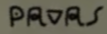

問題のシーン


それぞれ19:51、20:17、20:20付近
2023年10月15日、TVerで公開終了直前の『星屑テレパス』第1話を観たことを友人に伝えました。すると
「ところで、気づきました？」
「宇宙文字の造形に着目してもう一周だ」
ということなので見直しました。
なお、解読結果はいくらでも出回っているので、この記事はどうやって解読したかの方に重点を置くことにします。
それぞれ19:51、20:17、20:20付近
「ラテン文字っぽい文字が多い」
「なんか語末に s 多いな（例えば）」
「表紙に字上符ある（）じゃん、エスペラントです」
「よくみたら ⟨ŭ⟩ がありますね（）？ じゃあそうだよ」
→元言語はエスペラント、文字を置き換えただけと推測。ユリアーモっぽい。
「じゃあ解読してくか……」
「手前のページから見ていきます」
解読済：s (1/28)
「ところで表紙の、SPACEっぽいですよね」
「とすると ⟨e⟩ っぽいやつが c ？」
「じゃあは ĉ- なんだろうけど、 ĉi か ĉu か ĉe か…… あ ĉi tiu か」
解読済：c, ĉ, i, s, t, u (6/28)
「ĉ 繋がりで 6 行目を見よう→」
「ĉio……かなあ」
「次は形からして mi っぽい」
「あー povos だ」
「うーん次はわからん（fari …？）」
「どうみても estas ですね」
「じゃあ ate??o だけど、まあ atendo ですかね」
解読済：a, c, ĉ, d, e, i, m, n, o, p, s, t, u, v (14/28)
「続き、7行目→」
「って ?a ですよね、なんだろう」
「momenton」
「de」
「じゃ la か、筆記体だ」
「??aso 、なんでしょうねこれ」
解読済：a, c, ĉ, d, e, i, l, m, n, o, p, s, t, u, v (15/28)
「8行目→」
「la」
「antaŭvidita— うおー隠れてる」
「—te?iga」
「ラテン文字が残ってるの、いいんですかね……」
解読済：a, c, ĉ, d, e, i, l, m, n, o, p, s, t, u, v (15/28)
「9行目→」
「??n?to 謎」
↑ p が解読済であることを忘れています
「estas la te?— （teroな気はするね ）」
解読済：a, c, ĉ, d, e, i, l, m, n, o, p, s, t, u, v (15/28)
「10行目→」
「s?? ĉi tiu」
↑ u が解読済であることを忘れています
「planedo か、『惑星』って «planeto» じゃないんだ」
↑後から気付いたんですけど、これ -et- を避けるためだったりします？
解読済：a, c, ĉ, d, e, i, l, m, n, o, p, s, t, u, v (15/28)
「11行目→」
「mi de?i?as…… deziras だろうなあ」
解読済：a, c, ĉ, d, e, i, l, m, n, o, p, r, s, t, u, v, z (17/28)
「上に戻りますか、1行目→」
「ĉi tiu」
「?osmoveturilo 、kosmoveturilo でしかないでしょ」
「ne 、はい」
解読済：a, c, ĉ, d, e, i, k, l, m, n, o, p, r, s, t, u, v, z (18/28)
「続いて2行目→」
「plu utilas かあ、そんなこと言ってたよね」
解読済：a, c, ĉ, d, e, i, k, l, m, n, o, p, r, s, t, u, v, z (18/28)
「3行目→」
「iu? el la ?unkcio?」
「funkcio... j だこれ なるほどー」
解読済：a, c, ĉ, d, e, f, i, j, k, l, m, n, o, p, r, s, t, u, v, z (20/28)
「4行目→」
「jam finis sion rolon」
解読済：a, c, ĉ, d, e, f, i, j, k, l, m, n, o, p, r, s, t, u, v, z (20/28)
「5行目→」
「mi ne pavas ripari ilin」
「一応調べたけど、尾羽を広げはしないですね」
解読済：a, c, ĉ, d, e, f, i, j, k, l, m, n, o, p, r, s, t, u, v, z (20/28)
「さて、本文も粗方読めたし表紙行くか→」
「spaca voja... ĝ か」
「ta?li?ro...」
「あっ『宇宙航海日誌』って言ってたじゃん、日記は «taglibro» らしいので、その通り当て嵌めればいいですね」
解読済：a, b, c, ĉ, d, e, f, g, ĝ, i, j, k, l, m, n, o, p, r, s, t, u, v, z (23/28)
〜対応付け完了（残りの翻字は省略）〜
ということで、解読結果は次のようでした。なお、エスペラントの文法に合わない部分は下線を引き、エスペラント文法に合わせた修正案を角括弧で示しています。斜体はラテン文字のまま書かれていた文字です。
表紙：
spaca vojaĝa
taglibro
本文（奥）：
—aj prepar—
estas finitaj.
brilla [brila] mondo, luma m—
—kiun mi ir—
—o.
本文（手前）：
ĉi tiu kosmoveturilo ne
plu utilas.
iuj el la funkcioj
jam finis sion [sian] rolon*.
mi ne pavas [povas] ripari ilin.
ĉio mi povos fari [ĉio, kion mi povas fari,] estas atendo [atendi]
la momenton de la kraso [kraŝo].
la antaŭvidita alteriga [alteriĝa]
punkto estas la tero.
sur ĉi tiu planedo,
mi deziras
* これを «siajn rolojn» に修正するものもありますが、PMEGに拠れば、 funkcio の一つ一つに単一の rolo が対応する場合は «sian rolon» で構いません。実際、ここではそれでよいでしょう（2023-10-19 追記、2023-12-25 修正）。
対応表：
| latine | kosmo-lingve | ||
|---|---|---|---|
| a |

|
||
| b | |||
| c | ĉ |

|

|
| d | |||
| e |

|
||
| f |

|
||
| g | ĝ |

|

|
| h | ĥ | - | - |
| i |

|
||
| j | ĵ |
*, 
|
- |
| k | |||
| l |

|
||
| m |

|
||
| n |

|
||
| o | |||
| p |

|
||
| r | |||
| s | ŝ |

|
- |
| t |

|
||
| u | ŭ |

|
- |
| v |

|
||
| z | |||
* 2023-10-19 追記